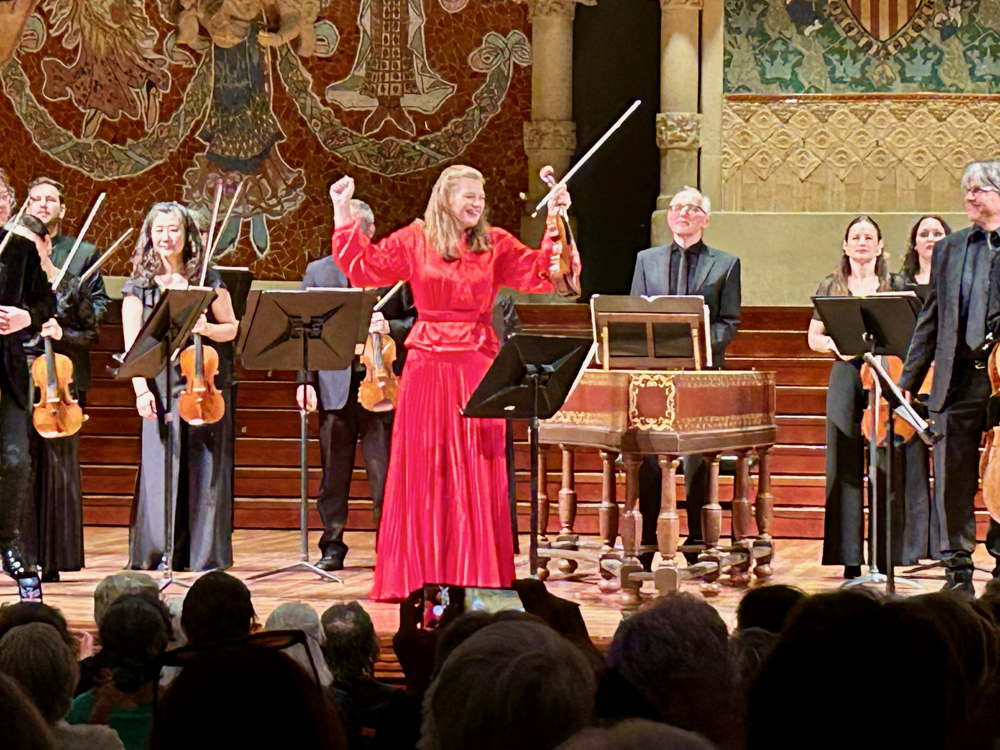

Elsa Álvarez

Barcelona. 29/04/26. Palau de la Música. Rota, Concerto per l’archi. Dubugnon, Piccolo concerto grosso, op. 87. Geminiani, Concerto grosso núm. 12, en re menor, H. 143, “La Folia”. Vivaldi, Il Cimento dell’Armonia e dell’Inventione, op. 8/1-4, “Les quatre estacions”. Gregory Ahss, violí i director. Janine Jansen, violí. Camerata Salzburg.
No m’agraden Les quatre estacions. Més ben dit, el que no me n’agrada és la vulgarització extrema en què fa molts anys que han caigut. Sembla com si Vivaldi només hagués escrit aquests quatre concerts, quan en realitat en va escriure prop de cinc-cents. Però aquests són els que es toquen sempre, segurament perquè és música programàtica, descriptiva, i perquè al llarg dels anys s’ha fet servir en anuncis i el públic general —i poc donat a la música— la té associada a una cosa bucòlica, més aviat com un element decoratiu, o pitjor encara, com un accessori prescindible.
Quan el Palau de la Música programa Les quatre estacions ja tremolo, perquè sovint són concerts de diumenge a la tarda als quals assisteix un públic per al qual la música és un entreteniment bonic que dona una pàtina de cultura. He de reconèixer que anava amb aquesta predisposició al concert de la Camerata Salzburg i Janine Jansen. Però el que vaig veure i escoltar va ser tan extraordinari que em va fer embeinar els prejudicis.
Janine Jansen és sens dubte una violinista molt mediàtica, però malgrat això, és una artista en majúscules, plena de sensibilitat, que fa música de debò, des de l’ànima, perquè la sent per dins. Però començo pel principi.
El concert va tenir dues parts, una amb compositors moderns i l’altra amb compositors barrocs. En primer lloc la Camerata Salzburg va interpretar el Concerto per l’archi de Nino Rota, el famós compositor de bandes sonores. N’havia fet una escolta prèvia i ja m’havia adonat que era música del segle XX plena de qualitat i amb una gran influència de la música cinematogràfica, concretament de pel·lícules d’intriga psicològica i trastorns mentals, o això és el que em va suggerir a mi. Em va fer pensar en la magnífica pel·lícula La migliore offerta, de Tornatore, que tinc clavada al cap des que la vaig veure, la història d’aquell subhastador d’art incorruptible i misogin al qual uns pseudoamics depredadors fan caure amb un pla molt sofisticat on una dona misteriosa el sedueix a través de l’art. La Camerata Salzburg va demostrar un múscul esplendorós amb una corda brillant i incisiva, sense resultar en cap cas pesant o opressiva. Va haver-hi una gran intensitat carregada de matisos, i tensió i vivacitat en el moviment final.
La segona peça va ser una estrena a Catalunya —tal com deia la web oficial del compositor, Richard Dubugnon—, el Piccolo concerto grosso, op. 87, un concert a l’estil barroc, per a quartet de corda i orquestra de cordes, escrit per a Janine Jansen, que en va ser una de les protagonistes.
Tinc un gust força conservador en música i en art en general, però m’agrada estar oberta a novetats i a peces i estils que desconec. En els darrers anys he escoltat obres d’estrena que m’han interessat molt, però la de Dubugnon no va ser només interessant. Va ser, pel meu gust, un concert estèticament preciós, que beu de l’estil barroc, però el fa nou, diferent, el desconstrueix amb molta elegància. Em trec el barret davant d’un compositor de l’actualitat, que jo posaria al costat dels compositors més importants del segle XX.
El Concerto grosso núm. 12, “La Folia”, de Geminiani, va ser el moment perquè Gregory Ahss es lluís com a violí solista, i ho va fer amb un so esplendorós i una paleta molt àmplia de registres que van donar personalitat a les variacions i les va individualitzar. El so de la Camerata Salzburg va ser realment incisiu i molt poderós.
Però la peça que donava títol al concert, i la que tothom esperava amb deler era, sens dubte, Les quatre estacions. Abans de res cal dir que va haver-hi un silenci gairebé sepulcral al llarg dels quatre concerts. Ho remarco perquè aquesta mostra imprescindible de respecte musical es fa cada vegada més difícil de trobar al Palau.
Janine Jansen i la Camerata Salzburg —tots amb instruments moderns— van demostrar que encara hi ha espai per reinterpretar aquests concerts tan arxiconeguts. No és que en fessin cap reinterpretació original, sinó que amb un ritme a vegades més lent, va permetre assaborir millor cadascun dels detalls i les al·lusions a la natura que fa la música d’il prete rosso. Jansen no es va mostrar com una diva del violí, sinó com una artista que feia música de manera entusiasta al costat dels seus col·legues. Petits moments com el diminuendo al final del Largo de la Primavera o la filigrana melòdica de Jansen al segon moviment de l’Estiu van ser reveladors i van marcar la diferència entre una interpretació excel·lent però estàndard i una d’única i excepcional com aquesta.
En molts moments el diàleg entre el violí i el continu va ser d’un intimisme de dimensió cambrística que va allunyar la interpretació de l’espectacularitat virtuosística. Vaig tenir la sensació de copsar els detalls de la natura com mai abans. O potser és que feia molts anys que no havia sentit Les quatre estacions en directe.
Al primer moviment de la Tardor va haver-hi un contrast molt gran entre l’episodi central lànguid i la reexposició del tema principal, molt juganer, mentre que a l’Hivern vam percebre exactament el fred gèlid en un contrast preciós entre el lirisme de la melodia del violí i les notes en staccato de les cordes, de so molt aspre. Va ser, en conjunt, una versió d’una granularitat absoluta, on cada detall estava perfectament pensat i dissenyat per produir l’efecte que Vivaldi volia.
Janine Jansen va ser la protagonista, sí, també escènicament, amb un vestit vermell brillant que li donava l’aire d’una profetessa. Però no va fer gens d’ombra a la Camerata Salzburg, una formació de corda que va brillar amb llum pròpia. En aquest concert Les quatre estacions van recuperar la condició de música en majúscules, d’alt nivell, però tot i així, és de justícia reivindicar la resta de concerts que el gran Antonio Vivaldi va escriure, i que es programen massa poc.